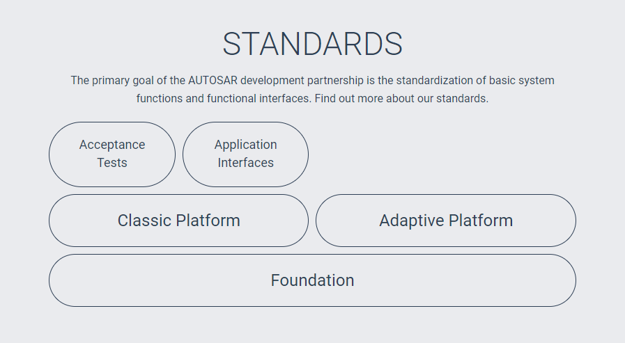
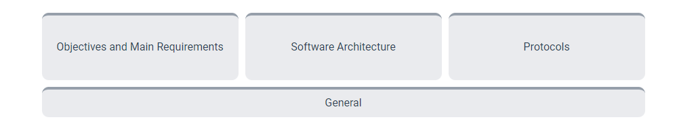
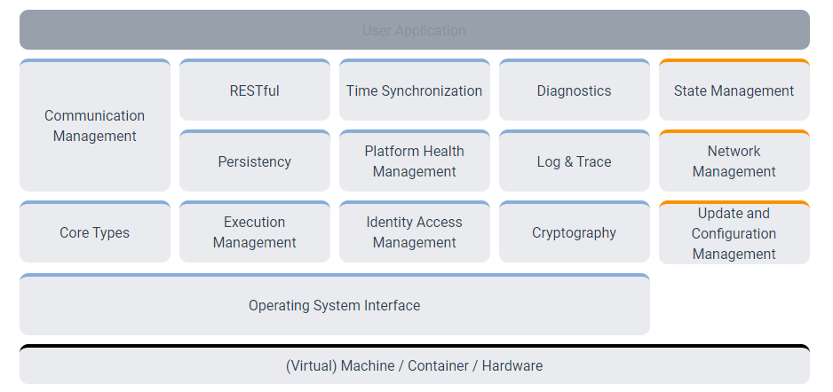
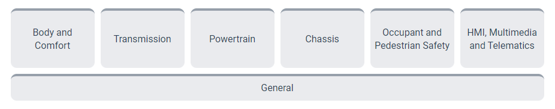

Appendix - 3 AUTOSAR Software Framework
截止现在（20211124），最新的发布的版本是R20-11，主要包含CLASSIC PLATFORM、ADAPTIVE PLATFORM、FOUNDATION三个部分。

Foundation standard 确保AUTOSAR平台间的互操作，主要包含common requirements和technical specifications（例如AUTOSAR平台间的protocols）两部分。 
AUTOSAR Classic Platform architecture distinguishes on the highest abstraction level between three software layers which run on a microcontroller: application, runtime environment (RTE) and basic software (BSW)
3.
4.
5.